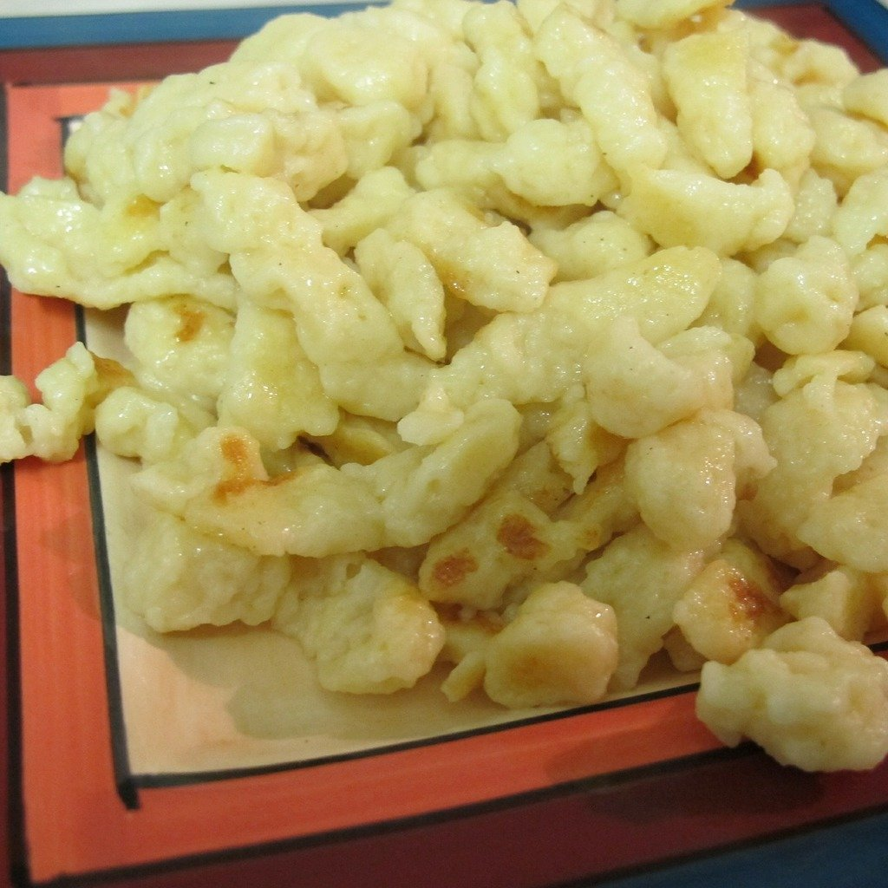

Spätzle

Description
Apparently spätzle (aka spaetzle) translates to little swallows in German, which makes a lot of sense when you consider their shape. This recipe for micro-dumplings cooks in a just a few minutes. They're great plain with browned butter or topped with slowly braised meat.
Ingredients
- ½ cup all-purpose flour, plus more as needed
- 3 tablespoons milk, or as needed
- 1 large egg
- 1 tablespoon crème fraîche, sour cream, or plain yogurt
- ½ teaspoon kosher salt
- 1 pinch cayenne pepper
Steps
- Whisk flour, milk, egg, crème fraîche, salt, and cayenne pepper together in a bowl until batter drips slowly off whisk. Add a bit more flour if batter seems too thin; add a bit more milk if batter seems too thick.
- Bring a large pot of salted water to a simmer over medium-high heat. Push a spoonful of batter into the simmering water through the smooth side of a cheese grater with fairly large holes using a spatula.
- Cook spätzle in batches until they rise to water's surface, about 3 minutes. Remove spätzle with a slotted spoon. Repeat with remaining batter.
Home